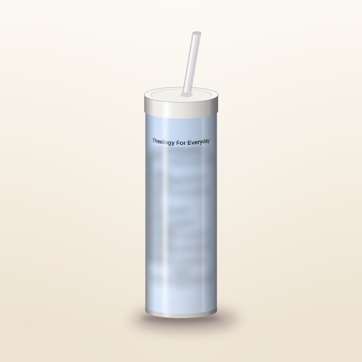
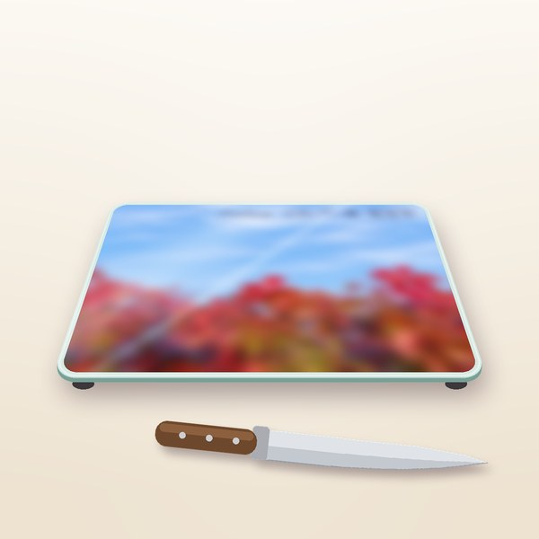

How It’s Made
Every Glimpses of Glory piece begins with a photo we took ourselves: a moment of light, color or quiet beauty we noticed and didn’t want to forget.
We make each one with a simple desire: to glorify God, and to give you a glimpse of His glory in the everyday things around you, like your morning coffee, your kitchen counter, or a note in the mail.
Each item is designed, printed and finished right here at home, and we make our own plastic gift and display boxes here too.
Greeting Cards
Our cards pair our own photographs with a word of Scripture or encouragement. Each one is printed with the highest-quality process, then checked and packed with care, ready for your own words to someone you love.
Shop Greeting Cards →
Tumblers
Each 20 oz tumbler starts as a design built around one of our photos. We print it with sublimation ink, wrap the print snugly around the tumbler, and apply heat in a tumbler press or our sublimation oven so the design bonds into the coating. Then we unwrap it, let it cool, and look it over before it’s ready for you.
Hand wash recommended.
Shop Tumblers →Coasters
Our coasters are 4-inch square ceramic with a glazed face and a cork back. After we print the design, we heat press it onto the glazed face at about 400°F for a few minutes, so the ink becomes part of the surface. Each coaster cools flat and is inspected before it’s packed.
For hot or cold drinks. Just wipe clean.
Shop Coasters →
Glass Cutting Boards
Our tempered glass boards, about 11 × 8 in, make a lovely decorative or serving piece. Once the design is printed, we press it using an alignment jig we designed and 3D printed ourselves, so every design sits straight. Each board then cools and is inspected.
Hand wash only.
Shop Glass Cutting Boards →Packaging & Stands
Any plastic items, like gift boxes and display boxes, are designed in-house and either vacuum-formed or 3D printed by us. Our cutting board display stand, for example, is designed here and 3D printed on our own printer, and holds a board in landscape or portrait.
Many website orders arrive in our clear gift packaging, finished with a printed backing card.
Some gifts also come in a white gift box with a lid or a windowed treat box, so they arrive ready to give.
Shop Gifts & More →However it reaches you, we hope each piece is a small reminder that His glory is all around us, even in the everyday.